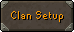
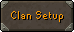
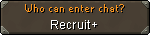
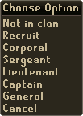
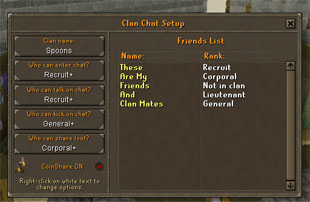
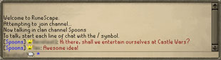

")
Controls - Clan Chat
Introduction
Setting Up

|
To start chatting, you'll need to either set up your own channel or join one that someone else has made. You can do this by clicking on one of these buttons:
Other reasons you may not be able to join a chat channel include:
|
 

The people you see in the centre of the interface are those people on your friends list, so if you have a clan member that you'd like to be able to assign a rank, you will need to add them to your friends list. You can set your clan chat channel to allow anyone to join - allowing players that aren't on your friends list to join - but you will not be able to assign them a rank, and they may be kicked if the channel is full and a ranked clan member joins.
 |
Clan name This button enables you to give your chat channel a name. This will identify chat on this channel when it appears in your chat box. Your chat channel will not work until you assign it a name. |
|  | Who can enter chat? You can set this to allow only ranked members of your clan to join your chat channel, or leave it open to anyone. If you adjust this to increase the rank required while people below that rank are in your chat channel, they will be kicked off when the change takes affect. |
 |
Who can talk on chat? You can set this to allow some people to talk while others can only observe. This could be useful if you have a message that you want everyone to see without other chat pushing it up the chat box too quickly. |
 |
Who can kick on chat? By adjusting this, you can give other members of your clan the ability to 'kick' people out of the chat. There is more on 'kicking' below. |
 |
Who can share loot? When you are in a multicombat area you can set this to let only a specific rank share loot while LootShare is on (see Controls - LootShare). |
The first thing to do when setting up your channel is to name it. This is the name that will appear next to any chat made inside the channel, which will help you identify that something is being said in that discussion, as opposed to public chat or private messages from your friends. No one will be able to use the channel until it has a name. Be aware that characters with accents (ö, ä, etc.) will not be displayed. Any word normally blocked by the chat filter will also be blocked for use as a channel name and using offensive words to name your chat channel will lead to action being taken against your account.
Please note that any changes you make to your clan chat options will take up to a minute to go into effect.
 |
The other fields on the left show their default settings. If you wish to change those settings, simply right-click to bring up the other options, which you can see to the left. As you can see, these are the rank restrictions you can apply to each category. These ranks should be varied enough for you to customise your chat channel exactly the way you want it.
Note that a Jagex Moderator can always join a chat, will always be able to chat on it, and can kick any player off the chat. In your favour, though, you can assign them any rank you want! To assign ranks to your clan, right-click on their rank in the main section of the interface. This will bring up the options you see to the right. The owner of the chat channel can adjust these ranks as they see fit. It's probably a good idea to allow a couple of other people to kick players from the chat, just in case you're a bit busy slaying some mighty beast or are offline. |
 |

Judging from its name, this clan is obviously one that fights solely with the cooking weapons earned from Recipe for Disaster!
In this example, you can see that the player 'Friends' cannot enter the Spoons chat channel, that the player 'Clan Mates' is able to kick other users off the chat channel, and that 'These' and 'Friends' will be unable to share loot with the rest of the group.
Anyone assigned a rank or on the owner's friends list will also have the following icons in the clan chat list:
| Friend | Recruit | Corporal | Sergeant |
| Lieutenant | Captain | General | Channel owner |
Clan Chatting
As noted earlier, you must click 'Join chat' and type in the name of the channel owner to access a clan chat channel. Be aware that you must do this even if you are the channel owner. Also be aware that you can join a chat channel even if the owner is offline. This is another good reason to have a few people that can kick from chat if you are offline.

 before anything you write. If you are connected to a channel this will automatically be sent to everyone else in the chat.
before anything you write. If you are connected to a channel this will automatically be sent to everyone else in the chat.
To leave the chat again, simply click the 'Leave chat' button that has replaced the 'Join chat' button.
If someone is abusing the chat channel and going against the Rules of RuneScape, they can still be reported as normal.
Kicking People from Chat
If you find that someone is abusing a chat channel, and you have the privilege, you can 'kick' them from the chat. To do this, right-click on the player's name and select 'Kick'. This will drop them from the channel and prevent them from joining again for one hour. You can only kick a player with a lower rank than yourself - the owner ranks above everyone in this regard.
Note that if everyone leaves the chat channel, then all 'kicks' will be lifted and those players will be able to join again.
If you'd like to keep someone from joining your chat channel, you can place them on your ignore list. This will prevent them from ever joining your clan chats. If you wish to allow them to enter again, simply remove them from your ignore list.

More articles in
Controls
|
|
|
Further Help
If this article does not help you, you may find the following sections of the RuneScape site helpful:
|
|